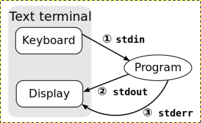
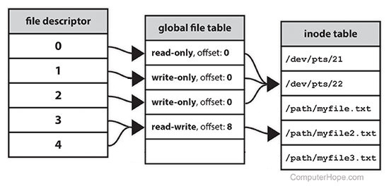
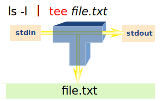
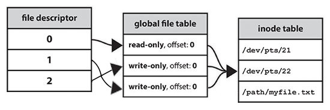

Redirection
지금은 터미널 프로그램을 열면 별다른 설정 없이 바로 명령을 입력할 수 있고 출력을 볼 수 있지만 unix 이전의 OS 에서는 프로그래머가 직접 입,출력장치를 (punch card reader, magnetic tape drive, disk drive, line printer, card punch, interactive terminal) 설정하고 연결해야 했다고 합니다. 하지만 unix 에서는 data stream 이라는 개념을 이용하여 장치를 추상화 함으로써 프로그래머가 어떤 종류의 장치를 사용하는지 알 필요 없이 동일하게 open, read, write 할 수 있게 하였고 또한 프로그램 실행시 자동으로 입, 출력 장치를 연결하여 많은 부담을 덜 수 있게 하였습니다. 컴퓨터에 연결되는 장치들은 결국은 비트 값들의 입, 출력에 의해 동작 되므로 OS 단에서 이와 같은 추상화가 가능합니다. ( 비트값이 실제 device 에서 나오던 소프트웨어 에서 나오던 차이가 없다 )
stream 은 디스크상의 파일이나 컴퓨터에 연결되는 여러 장치들을 통일된 방식으로 다루기 위한 가상적인 개념입니다. 따라서, stream 은 데이터가 어디서 나와서 어디로 가는지 신경을 쓸 필요없이 자유롭게 어떤 장치 및 프로세스, 화일들과 연결될 수 있어서 프로그래머에게 많은 편리성을 줍니다. 프로세스가 생성되면 기본적으로 입,출력을 위한 채널을 가지게 되는데 이것을 standard stream 이라고 합니다. 여기에는 입력을 위한 stdin, 출력을 위한 stdout, 에러출력을 위한 stderr 가 존재하며 터미널을 열면 shell 프로세스의 stdin, stdout, stderr 가 모두 터미널에 연결되어 사용자로부터 입력을 받고 출력을 합니다.
unix 에서는 보통 모든 장치들을 파일로 관리한다고 합니다. standard stream 도 각각 /dev/stdin, /dev/stdout, /dev/stderr 에 파일로 존재합니다. 우리가 사용하는 파일들은 보기 좋은 이름이 있지만 실제 프로그램 실행시에는 FD (file descriptor) 라는 양의 정수 번호에 의해 처리가 됩니다. 관례에 따라 stdin 은 0 번, stdout 은 1 번, stderr 는 2 번을 사용하는데 shell 에서도 redirection 을 할때 이와 같은 FD 번호를 사용합니다.

기본 사용법 과 default value
$ cat infile
hello
world
$ wc 0< infile 1> outfile
$ cat outfile
2 2 12
위의 wc 명령은 redirection 의 기본 사용법을 보여줍니다.
데이터 흐름의 방향을 나타내는 redirection 기호인 < (입력), > (출력), >> (출력:append) 을 가운데 두고
왼쪽에는 FD (file descriptor), 오른쪽에는 FD 나 filename 을 위치시키면 됩니다.
위의 예에서는 infile 을 FD 0 (stdin) 에 연결하여 입력으로 사용하였고 FD 1 (stdout) 을 outfile 파일에 연결하여
출력이 outfile 파일에 저장되게 하였습니다.
redirection 기호를 사용할땐 이렇게 FD 번호를 적어줘야 하지만 그렇지 않을경우 standard stream 이 사용됩니다.
따라서 < 기호는 입력을 나타내므로 좌측값 0 을 기본값으로 >, >> 기호는 출력을 나타내므로 좌측값 1 을 기본값으로 합니다.
그러므로 위의 예제는 다음과 같이 작성하여도 결과가 같습니다.
$ wc < infile > outfile
$ cat outfile
2 2 12
Redirection 기호 사용시 주의할점
< , >, >> 기호 좌측값은 공백없이 붙여야합니다. 그렇지 않으면 명령의 인수로 인식이 됩니다.
$ wc 0 < infile 1> outfile # 0 을 wc 명령의 인수로 인식.
wc: 0: No such file or directory
$ wc 0< infile 1 > outfile # 1 을 wc 명령의 인수로 인식.
wc: 1: No such file or directory
>, >> 기호의 우측값은 파일이름이 올경우는 괜찮지만 FD 번호가 올경우는 & 기호를 붙여줘야 합니다.
그렇지 않으면 FD 숫자가 파일이름이 됩니다.
# '>' 오른쪽에 '&' 를 붙이지 않으면 FD 번호를 파일이름으로 인식
# 에러 출력이 파일 '1' 로 가서 터미널에 메시지가 표시되지 않는다.
$ wc asdfgh 2>1
$ cat 1
wc: asdfgh: No such file or directory
# 이번에는 터미널에 메시지가 출력됨
$ wc asdfgh 2>&1
wc: asdfgh: No such file or directory
정리하면 이렇습니다. redirection 기호을 중심으로 왼쪽에 오는 FD 는 명령의 인수로 인식되지 않게 붙여쓰고
오른쪽에 오는 FD 는 파일로 인식되지 않게 & 를 붙여 사용하면 됩니다.
Redirection 기호의 위치
redirection 기호의 명령 행상 위치는 어디에 와도 상관없습니다.
$ echo hello > /tmp/out
$ > /tmp/out echo hello
$ echo > /tmp/out hello
$ echo hello >&2
$ echo >&2 hello
$ read -r line < file # < file 는 0< file 와 같은 것임
$ < file read -r line
$ cat <<END # <<END 는 0<<END 와 같은 것임
hello
END
$ <<END cat
hello
END
( ... ), { ... ;} 명령그룹, compound commands 의 경우는 뒤에 와야 합니다.
$ 2> /dev/null ( expr a + 2 )
bash: syntax error near unexpected token '('
$ ( expr a + 2 ) 2>/dev/null
OK
$ 2> /dev/null { expr a + 2 ;}
bash: syntax error near unexpected token '}'
$ { expr a + 2 ;} 2> /dev/null
OK
$ > /dev/null if true; then echo YES; fi
bash: syntax error near unexpected token 'then'
$ if true; then echo YES; fi > /dev/null
OK
$ > /dev/null while true; do echo YES; break; done
bash: syntax error near unexpected token 'do'
$ while true; do echo YES; break; done > /dev/null
OK
명령 치환은 redirection 보다 먼저 처리되므로 명령 치환에서 발생하는 출력을 같은 명령 라인에서 redirection 할 수 없습니다.
$ echo $( expr X + 2 ) 2>/dev/null
expr: non-integer argument
$ 2> /dev/null echo $( expr X + 2 )
expr: non-integer argument
$ echo $( expr X + 2 2> /dev/null )
OK
$ { echo $( expr X + 2 ) ;} 2> /dev/null
OK
Redirection 설정은 명령의 인수에 포함되지 않습니다.
$ args.sh foo.c < hello.c bar.c # < hello.c 는 명령의 인수에 포함되지 않는다.
$0 : /home/mug896/bin/args.sh
$1 : foo.c
$2 : bar.c
$ args.sh foo.c 2>&1 bar.c # 2>&1 는 명령의 인수에 포함되지 않는다.
$0 : /home/mug896/bin/args.sh
$1 : foo.c
$2 : bar.c
Redirection 기호는 쓰는 순서가 중요하다!
redirection 을 할때 중요한 부분이 순서입니다. 순서가 올바르지 않으면 제대로 redirection 이 되지 않습니다. 다음은 mycomm 실행결과 FD 2 (stderr) 를 FD 1 (stdout) 으로 연결하여 둘 모두를 outfile 에 쓰려고 하지만 이중 하나는 문제가 있습니다.
$ mycomm 2>&1 > outfile # 첫번째
$ mycomm > outfile 2>&1 # 두번째
위문장을 exec 명령으로 단계적으로 살펴보도록 하겠습니다.
exec 명령은 현재 shell 을 지정한 명령으로 대체하기 위해 사용하기도 하지만 redirection 설정을 현재 shell 에 적용시키기 위해서도 사용합니다.
터미널을 열어 ls -l /proc/$$/fd 을 실행해보면 FD 0, 1, 2 모두 터미널 /dev/pts/10 에 (저같은경우) 연결돼 있는것을 볼수있습니다.
# '$$' 는 현재 shell process id 를 나타냅니다.
$ ls -l /proc/$$/fd
total 0
lrwx------ 1 mug896 mug896 64 07.06.2015 15:04 0 -> /dev/pts/10 # stdin
lrwx------ 1 mug896 mug896 64 07.06.2015 15:04 1 -> /dev/pts/10 # stdout
lrwx------ 1 mug896 mug896 64 07.06.2015 15:04 2 -> /dev/pts/10 # stderr
여기서 한가지 알아두어야 할것은 FD 0, 1, 2 이 바로 /dev/pts/10 로 연결되는 것은 아니고 아래 그림처럼 중간에 커널에서 관리하는 open file table 이 있습니다. 첫 번째가 stdin, 두 번째가 stdout, 세 번째가 stderr 가 됩니다. 따라서 만약에 아래 FD 3, 4 번 처럼 FD 2 번이 FD 1 번의 stdout 을 가리키게 되면 ( 2>&1 ), stderr 출력도 모두 stdout 을 통해 터미널로 가게 되게 됩니다.

첫번째 mycomm 2>&1 > outfile
$ exec 2>&1
FD 2 의 stderr 를 FD 1 의 stdout 에 연결 하였습니다. 현재 FD 1, 2 번은 모두 동일한 터미널에( /dev/pts/10 ) 연결돼 있으므로 출력이 터미널로 가는것은 바뀌지 않습니다. 하지만 기존에 stderr 를 통해 터미널로 가던 메시지가 stdout 을 통해 터미널로 가게됩니다.
$ ls -l /proc/20040/fd
total 0
lrwx------ 1 mug896 mug896 64 07.06.2015 15:56 0 -> /dev/pts/10 # stdin
lrwx------ 1 mug896 mug896 64 07.06.2015 15:56 1 -> /dev/pts/10 # stdout
lrwx------ 1 mug896 mug896 64 07.06.2015 15:56 2 -> /dev/pts/10 # stdout 으로 변경
$ exec 1> outfile
FD 1 번을 outfile 로 연결하여 1 번 연결이 변경되었습니다. redirection 처리후에 FD 1 번만 outfile 로 연결된것을 볼 수 있습니다. 그러므로 첫번째 명령은 정상메시지만 outfile 로 가고 오류메시지는 stdout 을 통해 터미널로 가게 됩니다.
$ ls -l /proc/20040/fd
total 0
lrwx------ 1 mug896 mug896 64 07.06.2015 15:56 0 -> /dev/pts/10 # stdin
l-wx------ 1 mug896 mug896 64 07.06.2015 15:56 1 -> /home/mug896/outfile
lrwx------ 1 mug896 mug896 64 07.06.2015 15:56 2 -> /dev/pts/10 # stdout
오류메시지는 stdout 을 통해 터미널로 출력되므로 다음과 같이 하면 errfile 로 저장할 수 있습니다.
{ mycomm 2>&1 > outfile ;} > errfile
# 이때 { ;} 를 사용해야 합니다 그렇지 않으면 outfile 내용이 errfile 로 가게 됩니다.
$ cat x
11111111
$ cat y
22222222
$ echo 33333333 >> x >> y # 1>> x 가 설정되고, 다음에 1>> y 가 설정되면
# 최종적으로 stdout 은 파일 y 가 된다.
$ cat x
11111111
$ cat y
22222222
33333333
두번째 mycomm > outfile 2>&1
$ exec 1> outfile
FD 1 번을 outfile 에 연결하여 1 번 연결이 변경되었습니다. 이제 FD 1 번으로 출력하면 stdout 을 통해 outfile 로 가게됩니다.
$ ls -l /proc/19779/fd
total 0
lrwx------ 1 mug896 mug896 64 07.06.2015 15:33 0 -> /dev/pts/11
l-wx------ 1 mug896 mug896 64 07.06.2015 15:33 1 -> /home/mug896/tmp/outfile
lrwx------ 1 mug896 mug896 64 07.06.2015 15:33 2 -> /dev/pts/11
$ exec 2>&1
FD 2 번을 FD 1 번에 연결하였습니다. FD 2 번으로 출력하면 stderr 를 통해 터미널로 가던것이 이제는 stdout 을 통해 outfile 로 가게됩니다. redirection 처리후에 FD 1, 2 모두 outfile 로 연결된 것을 볼 수 있습니다. 따라서 두번째 명령은 FD 1 로 출력되는 정상 메시지, FD 2 로 출력되는 오류메시지 모두 outfile 로 가게 됩니다.
$ ls -l /proc/19779/fd
total 0
lrwx------ 1 mug896 mug896 64 07.06.2015 15:33 0 -> /dev/pts/11 # stdin
l-wx------ 1 mug896 mug896 64 07.06.2015 15:33 1 -> /home/mug896/tmp/outfile
l-wx------ 1 mug896 mug896 64 07.06.2015 15:33 2 -> /home/mug896/tmp/outfile
단축형 메타문자
bash 에서는 다음과 같이 편리하게 사용할 수 있는 단축형 메타문자를 제공합니다.
mycomm > outfile 2>&1을 줄여서mycomm &> outfilemycomm >> outfile 2>&1을 줄여서mycomm &>> outfilemycomm1 2>&1 | mycomm2을 줄여서mycomm1 |& mycomm2
연습문제 )
다음은 프롬프트 상에서 실행한 명령인데요.
exec 명령으로 FD 2 (stderr) 를 FD 1 (stdout) 으로 연결하였으므로
date -@ 명령의 오류메시지가 /dev/null 로 전달될까요?
단계적으로 따라가 보겠습니다.
$ exec 2>&1 ; date -@ > /dev/null
1 . exec 명령에 의해 FD 2 의 stderr 가 FD 1 의 stdout 으로 변경됩니다.
exec 2>&1 ( FD 1 : stdout, FD 2 : stdout )
2 . FD 1 의 stdout 이 /dev/null 로 변경됩니다.
1> /dev/null ( FD 1 : /dev/null, FD 2 : stdout )
최종적으로 이 상태에서 date -@ 명령의 오류메시지는 /dev/null 로 가는것이 아니고
stdout 을 통해서 터미널로 가게 됩니다.
따라서 오류메시지가 /dev/null 로 가게 하려면 다음과 같이 해야 합니다.
( exec 2>&1 ; date -@ ) > /dev/null
다음은 date -@ 명령의 오류 메시지를 2> errfile 로 받지 않고 1> errfile 로 받고 있습니다.
좀 복잡해 보일 수 있는데 단계별로 따라가 보면 어렵지 않습니다.
( 3> outfile 2>&1 1>&3 date -@ ) > errfile
1 . FD 3번을 생성하고 outfile 에 연결합니다.
3> outfile ( FD 1 : stdout, FD 2 : stderr, FD 3 : outfile )
2 . FD 2번을 1번에 연결하는데 현재 FD 1, 2 번은 모두 터미널에 연결돼 있으므로 출력이 터미널로 가는 것은 바뀌지 않습니다. 하지만 오류메시지가 기존의 stderr 를 통해서 터미널로 가던 것이 이제는 stdout 을 통해서 터미널로 가게 됩니다.
2>&1 ( FD 1 : stdout, FD 2 : stdout, FD 3 : outfile )
3 . FD 3번은 현재 outfile 에 연결되어 있으므로 FD 1 번도 따라서 outfile 로 연결됩니다.
1>&3 ( FD 1 : outfile, FD 2 : stdout, FD 3 : outfile )
최종적으로 이 상태에서 date 명령의 정상메시지는 FD 1 번을 통해 outfile 로 쓰여지게 되고
오류메시지는 FD 2 번을 통해 터미널로 출력이 되지만 stderr 가 아니라 stdout 을 통해서 출력이 됩니다.
따라서 subshell 외부에서 오류메시지를 잡기 위해서는 2> errfile 이 아니라 1> errfile 로 설정을 해야 합니다.
Script 작성시 redirection 의 활용
스크립트 실행 시에 FD 0, 1, 2 번은 연결이 터미널이 아닌 파일이나 파이프가 될수 있으므로 사용하기전 백업과 복구 과정을 거쳐야 합니다.
백업 FD 를 삭제할 때는 간단하게 복구 과정에서 뒤에 - 기호를 붙이면 됩니다.
# FD 3 번을 새로 생성하면서 1번에 연결하였습니다.
exec 3>&1 # 그러므로 1번 연결이 3번에 백업된 것과 같습니다.
exec 1> outfile # FD 1 번을 outfile 에 연결해 사용
... # 이후부터는 stdout 출력은 모두 outfile 로 가게됩니다.
...
exec 1>&3- # FD 1 번을 백업해 두었던 3 번에 다시 연결하여 복구하고 3 번은 삭제 (3-)
스크립트 실행시 stdin 을 redirect 하여 사용후 복구하는 과정입니다.
!/bin/bash
exec 3>&0 # FD 0 번을 사용하기 전에 3 번에 백업
exec 0< infile # infile 을 FD 0 에 입력으로 연결 하므로 화살표 방향이 왼쪽이 됩니다.
# 실제 리소스와의 연결이므로 방향을 올바르게 설정해야 합니다.
# ( 실행하려면 infile 을 준비하세요 )
read var1 # 2 개의 라인을 infile 로부터 읽어들입니다.
read var2
echo read from infile: $var1
echo read from infile: $var2
exec 0>&3- # FD 0 번을 3 번 으로부터 복구하고 3 번은 삭제 (3-)
# FD 0 번을 복구하였으므로 터미널로부터 입력을 받게 됩니다.
read -p "enter your favorite number : " var
echo $var
스크립트 실행시 stdout 을 redirect 하여 사용후 복구하는 과정입니다.
#!/bin/bash
echo start--------------
exec 3>&1 # FD 1 번 백업
# FD 1 을 outfile 로 출력으로 연결 하므로 화살표 방향이 오른쪽이 됩니다.
# 실제 리소스와의 연결이므로 방향을 올바르게 설정해야 합니다.
# 이제 모든 stdout 메시지는 outfile 로 저장됩니다.
exec 1> outfile
echo this message is going to outfile
exec 1>&3- # FD 1 번 복구
# FD 1 번을 복구하였으므로 다음 메시지가 터미널에 보이면 정상적으로 실행된 것입니다.
echo end----------------
다음은 스크립트 실행시 stdin, stdout 을 redirect 하여 사용후 복구하는 과정입니다.
#!/bin/bash
echo start -----------------
exec 3>&0 4>&1 # FD 0, 1 번 백업
exec 0< infile # 화살표 방향 왼쪽
exec 1> outfile # 화살표 방향 오른쪽
# stdin(0) 으로 입력을 받아서 'tr' 처리후 stdout(1) 으로 출력.
# 현재 redirection 을 한 상태이므로 infile 에서 읽어들여 outfile 로 출력하게 됩니다.
# ( infile 에 있는 모든 라인이 처리 됩니다 )
tr a-z A-Z # 또는 sed 's/^/foo: /'
exec 0>&3- 1>&4- # FD 0, 1 번 복구하고 3, 4 번은 삭제
# 다음 마지막 메시지가 터미널에 보이고 outfile 파일 내용이 모두 대문자로 변경돼 있으면
# 정상적으로 실행된 것입니다.
echo end -----------------
Subshell 에서 실행되는 파이프를 피해 redirection 을 이용해 while 로 파일을 처리하는 예입니다.
#!/bin/bash
exec 3>&0
exec 0< infile # infile 을 FD 0 번에 입력으로 연결
lines=0
while read -r line # 기본적으로 stdin 에서 읽어들이므로
do
echo "$line"
(( lines++ ))
done
exec 0>&3-
echo number of lines read : $lines
----------------------------------
#!/bin/bash
exec 3< infile # infile 을 FD 3 번에 입력으로 연결
lines=0
while read -r line
do
echo "$line"
(( lines++ ))
done <& 3 # <&3 은 0<&3 과 같은 것임
exec 3>&-
echo number of lines read : $lines
----------------------------------
#!/bin/bash
exec 3< infile
lines=0
while read -r line <& 3 # <&3 는 파일 포지션이 사용되므로 여기에 놓고 사용해도 된다.
do
echo "$line"
(( lines++ ))
done
exec 3>&-
echo number of lines read : $lines
동일한 파일을 입, 출력에 사용하면?
하나의 파일을 redirection 을 이용해 동시에 입, 출력에 사용하는 것은 두개의 FD 를 열어서 각각의 파일포지션을 이용하는것과 같습니다.
입, 출력에 쓰일 파일 x 의 내용
$ cat x
0000000000000000
1111111111111111
파일 x 로부터 입력을 받고 동일한 파일로 출력을 하여 append 할경우.
순서대로 ls 명령의 출력이 x 파일에 append 되고 다음에 sed 명령에서는 append 된 내용이 함께 입력으로 사용되는걸 볼 수 있습니다. ( 0 이 모두 X 로 바뀜 )
$ { { ls -l /dev/fd/; sed 's/0/X/g' ;} >> x ;} < x
$ cat x
0000000000000000
1111111111111111
total 0
lr-x------ 1 mug896 mug896 64 08.03.2015 10:06 0 -> /home/mug896/tmp/3/x
l-wx------ 1 mug896 mug896 64 08.03.2015 10:06 1 -> /home/mug896/tmp/3/x
lrwx------ 1 mug896 mug896 64 08.03.2015 10:06 2 -> /dev/pts/8
lr-x------ 1 mug896 mug896 64 08.03.2015 10:06 3 -> /proc/15885/fd/
XXXXXXXXXXXXXXXX # 0 이 모두 X 로 바뀜
1111111111111111
total X
lr-x------ 1 mug896 mug896 64 X8.X3.2X15 1X:X6 X -> /home/mug896/tmp/3/x
l-wx------ 1 mug896 mug896 64 X8.X3.2X15 1X:X6 1 -> /home/mug896/tmp/3/x
lrwx------ 1 mug896 mug896 64 X8.X3.2X15 1X:X6 2 -> /dev/pts/8
lr-x------ 1 mug896 mug896 64 X8.X3.2X15 1X:X6 3 -> /proc/15885/fd/
이번에는 명령 실행전에 파일 x 를 삭제합니다. 파일 x 가 먼저 삭제되었기 때문에 ls 명령의 출력이 파일 제일 위에 위치 하게됩니다. 그리고 여기서 눈여겨 볼점은 sed 명령에서 입력으로 사용되는 데이터가 ls 명령의 출력이 아닌 이전 x 파일의 내용 이라는 점입니다.
$ { rm -f x; { ls -l /dev/fd/; sed 's/0/X/g' ;} >> x ;} < x
$ cat x
total 0
lr-x------ 1 mug896 mug896 64 08.03.2015 10:08 0 -> /home/mug896/tmp/3/x (deleted)
l-wx------ 1 mug896 mug896 64 08.03.2015 10:08 1 -> /home/mug896/tmp/3/x
lrwx------ 1 mug896 mug896 64 08.03.2015 10:08 2 -> /dev/pts/8
lr-x------ 1 mug896 mug896 64 08.03.2015 10:08 3 -> /proc/15951/fd/
XXXXXXXXXXXXXXXX
1111111111111111
그러므로 다음과 같이 하면 파일 x 의 내용을 sed 명령으로 바꾸어 저장할 수 있습니다. 또한 파일의 앞부분에 내용을 추가하는 prepend 기능도 가능합니다.
$ { rm -f x; sed 's/0/X/g' > x ;} < x
$ cat x
XXXXXXXXXXXXXXXX
1111111111111111
-----------------------------------------------------
# 파일의 뒷부분에 append 하는 것은 '>>' 연산자로 가능하지만
# 파일의 앞부분에 추가하는 것은 다음과 같이 할 수 있습니다.
$ cat x
prepend test
11111
22222
$ { rm -f x; { echo AAAAA; echo BBBBB; cat ;} > x ;} < x
# 또는
$ { rm -f x; { cat <<\EOF; cat ;} > x ;} < x
AAAAA
BBBBB
EOF
$ cat x
AAAAA
BBBBB
prepend test
11111
22222
이 방법을 사용할 때 한가지 주의할 점은 만약에 사이즈가 큰 파일을 처리 중에
Ctrl-c 로 중단하거나 하면 처리되지 못한 나머지 뒷부분은 모두 잃어버리게 됩니다.
따라서 sed -i 의 경우는 임시파일을 만들어서 작업을 하고 완료됐을 때
원본파일과 교체를 하죠.
Redirection 우선순위
{ ;} 은 명령 grouping 외에 메타문자 우선순위 조절에도 사용됩니다.
redirection 기호도 shell 메타문자 중에 하나로 { ;} 를 이용하면 우선순위를 조절할 수 있습니다.
아래와 같은 명령이 실행될 경우 제일 바깥쪽 메타문자가 먼저 처리되고 차례로 안쪽에 있는 메타문자가 처리됩니다.
$ { command 2번 ;} 1번
# FD 3 번이 생성되어있지 않아 오류 발생.
$ date >&3
bash: 3: Bad file descriptor
$ date >&3 3>&1
bash: 3: Bad file descriptor
# 3>&1 가 먼저 처리되므로 FD 3 번이 생성되어 오류가 발생하지 않는다.
$ { date >&3 ;} 3>&1
Sat Aug 8 03:31:05 KST 2015
앞선 예제 { rm -f x; sed 's/0/X/g' > x ;} < x 에서 파일 x 가 삭제되었음에도 불구하고 기존의 데이터를 읽어들일수 있었던 것도 외부에 있는 < x 가 먼저 처리되어 open 되었기 때문입니다.
사실 내부에 있는 x 는 삭제되어 다시 생성된 파일로 외부 x 와는 inode 번호가 틀립니다.
$ stat -c %i x; { rm -f x; sed 's/0/X/g' > x ;} < x; stat -c %i x
1709909
1709910
만약에 두 메타문자의 방향을 바꾸어 실행한다면 ?
먼저 > x 가 처리될 것이므로 x 파일 내용이 전부 삭제되겠죠
그다음 < x 이 처리되는데 읽어들일 내용이 없습니다.
다음 rm 명령이 실행되어 x 파일이 삭제됩니다.
$ { { rm -f x; sed 's/0/X/g' ;} < x ;} > x
$ cat x
cat: x: No such file or directory
명령 그룹에 redirection 의 적용
{ ... ;}, ( ... ) 를 이용한 명령 그룹, compound commands 그리고
함수를 정의할 때 마지막에 redirection 을 함께 정의할 수가 있습니다.
그러면 해당 명령 그룹에만 적용이 됩니다.
$ cat test.sh
#!/bin/bash
{
ls -l /dev/fd/
} 9< "$0" # { ;} 명령 그룹 마지막에 redirection 을 정의
ls -l /dev/fd/
------------------------
$ ./test.sh
total 0
lrwx------ 1 mug896 mug896 64 Jan 23 14:18 0 -> /dev/pts/15
lrwx------ 1 mug896 mug896 64 Jan 23 14:18 1 -> /dev/pts/15
lrwx------ 1 mug896 mug896 64 Jan 23 14:18 2 -> /dev/pts/15
lr-x------ 1 mug896 mug896 64 Jan 23 14:18 3 -> /proc/13434/fd
lr-x------ 1 mug896 mug896 64 Jan 23 14:18 9 -> /home/mug896/test.sh # fd 9 번이 정의됨
total 0
lrwx------ 1 mug896 mug896 64 Jan 23 14:18 0 -> /dev/pts/15
lrwx------ 1 mug896 mug896 64 Jan 23 14:18 1 -> /dev/pts/15
lrwx------ 1 mug896 mug896 64 Jan 23 14:18 2 -> /dev/pts/15
lr-x------ 1 mug896 mug896 64 Jan 23 14:18 3 -> /proc/13435/fd
다음은 파일을 읽어들여 홀수 라인은 odd.txt 에, 짝수 라인은 even.txt 에 저장합니다. 또는 두 번째와 같이 redirection 을 사용하여 각각 필터를 적용할 수도 있습니다.
while IFS= read -r line; do
echo "$line"
if IFS= read -r line; then echo "$line" >&3; fi
done > odd.txt 3> even.txt
{ while ... done | odd-filter > filtered-odd.txt ;} 3>&1 | even-filter > filtered-even.txt
다음은 함수를 정의할 때 마지막에 redirection 을 사용하였습니다. color 함수는 명령 실행결과 stderr 메시지를 stdout 메시지와 분류하여 빨간색으로 표시합니다.
color() (
set -o pipefail
"$@" 2>&1 1>&3 | sed $'s/.*/\e[31m & \e[m/' >&2 # 파이프 subshell 프로세스
) 3>&1 # color 함수에 적용
# 1. 함수를 정의할 때 { ;} 대신에 ( ) subshell 을 사용한 것은
# pipefail 옵션 설정을 함수에 국한하기 위해서입니다.
# 2. "$@" 는 color 함수명 뒤에 오는 인수들을 명령문으로 실행합니다.
# 3. "$@" 명령은 '|' 파이프 왼쪽에 위치하므로 stdout 이 파이프가 됩니다.
# 2>&1 : stderr 를 stdout 로 redirect 하므로 파이프를 통해 sed 입력으로 들어갑니다.
# 1>&3 : stdout 을 fd 3번 으로 연결하는데 fd 3번은 함수 밖에서 제일 먼저
# fd 1번 터미널로 연결했으므로 sed 입력으로 들어가지 않고 바로 터미널로 출력됩니다.
# 4. sed 입력으로 들어간 stderr 메시지는 color escape 문자 처리가 되어 출력됩니다.
# '\e' escape 문자 적용을 위해 $' ' quotes 이 사용되었습니다.
# & 문자는 앞에 매칭된 라인으로 치환됩니다.
테스트 해보기
f1() {
echo yes
echo error >&2
}
$ color f1
yes # stdout 은 흰색으로 출력
error # stderr 는 빨간색으로 출력
$ color date -@
date: invalid option -- '@' # 빨간색으로 출력
문제점 : 명령의 출력이 "정상메시지; 에러메시지; 정상메시지; 에러메시지;" 순서로 출력될경우 파이프로 인해 메시지 순서가 유지되지 않고 "정상메시지; 정상메시지; 에러메시지; 에러메시지;" 로 출력
Redirection 적용 범위
parent process 에 설정된 file descriptor 들은 기본적으로 child process 에게 상속됩니다. 따라서 다음과 같이 while 문의 stdin 을 /dev/null 로 연결할 경우 이 상태는 t.sh 스크립트가 실행될 때도 유지가 됩니다.
------ t.sh ------
#!/bin/bash
ls -l /dev/fd/
------------------
f1() { ./t.sh ;}
while :; do
f1
break
done < /dev/null
########### 실행결과 ############
# t.sh 스크립트 에서도 stdin 이 /dev/null 로 연결된 것을 볼 수 있습니다.
lr-x------ 1 mug896 mug896 64 2017-01-10 09:13 0 -> /dev/null
lrwx------ 1 mug896 mug896 64 2017-01-10 09:13 1 -> /dev/pts/9
lrwx------ 1 mug896 mug896 64 2017-01-10 09:13 2 -> /dev/pts/9
Redirection 은 명령이 실행되기 전에 처리된다.
명령문에 redirection 이 포함될 경우 명령 시작 전에 먼저 redirection 이 처리되어야 올바르게 입, 출력이 되겠죠. 이것은 다음과 같은 명령을 실행하는데 있어서 문제가 될 수 있습니다.
datafile 에서 앞의 100 라인만 남기고 삭제하려고 하지만
실행해보면 파일 사이즈가 0 이 되는 것을 볼 수 있습니다.
head 명령이 실행되기 전에 > 이 처리되어 파일의 내용이 모두 삭제되었기 때문입니다.
# datafile 은 같은 파일명
$ head -n 100 datafile > datafile
다음은 명령이 실행되기 전에 shell 에의해 처리되는 명령 치환, 프로세스 치환, here string 과 redirection 이 함께 존재할 경우 처리되는 우선순위를 알아보겠습니다.
$ seq 5 > file
$ cat file
1
2
3
4
5
# echo 명령이 실행되기 전에 명령치환, redirection 이 처리되지만
# 명령치환이 redirection 보다 우선해 처리되는 것을 알 수 있습니다.
# redirection 은 shell 메타문자 중에서 우선순위가 제일 높은것인데
# 그보다도 명령치환이 먼저 실행되는 것입니다.
$ echo "$( head -n3 file )" > file
$ cat file
1
2
3
----------------------------------
$ seq 5 > file
# 프로세스 치환 보다는 redirection 이 먼저 처리됩니다.
# 파일 내용이 삭제되어 값이 표시되지 않는걸 볼 수 있습니다.
$ cat <( head -n3 file ) > file
$ cat file
no output
---------------------------------
$ seq 5 > file
# 같은 redirection 끼리는 왼쪽에서 부터 차례로 실행.
# 만약에 위치를 바꾸면 파일 내용이 먼저 삭제되어 값이 표시되지 않습니다.
$ cat <<< $( head -n3 file ) > file
$ cat file
1
2
3
tee 외부 명령
명령을 실행했을 때 출력을 터미널로 보면서 동시에 파일로 저장할 수 있을까요? 이것은 redirection 을 이용한다고 해도 불가능한데요. tee 명령은 stdin 입력을 stdout 을 포함해 동시에 여러 파일로 전달할 수 있습니다.

$ ls # stdout 으로 출력
$ ls > file # file 로 출력
$ ls | tee file # stdout 과 file 로 출력
$ ls | tee file1 file2 file3 # stdout 과 file1 file2 file3 로 출력
$ tee file1 file2 <<END # stdout 과 file1 file2 로 출력
> 111
> 222
> END
$ tee file1 file2 <<END >&2 # stderr 와 file1 file2 로 출력
>111
>222
>END
$ tee file1 file2 <<END > /dev/null
>111
>222
>END
# make 명령 실행 결과를 터미널과 build_log.txt 에 동시에 출력
$ make -j `nproc` ... |& tee build_log.txt
# tee 명령을 이용해 기존 crontab 설정을 백업
$ crontab -l | tee crontab-backup.txt | sed 's/old/new/' | crontab –
# '-a' 옵션은 append 로 두개의 파일을 동시에 append
$ echo "root:$UID:1" | sudo tee -a /etc/subuid /etc/subgid
$ ps -ef | tee >(awk '$1 == "tom"' > toms-procs.txt) \
>(awk '$1 == "root"' > roots-procs.txt) \
>(awk '$1 == "httpd"' > httpd-procs.txt)
$ AA=$( echo hello | tee >(sed 's/^\|$/@/g') >(sed 's/^\|$/%/g') > /dev/null )
$ echo $AA
%hello% @hello@
tee 명령을 활용한 자동응답
사용자에게 입력을 받아 처리하는 프로그램에서 입력을 자동화하고 싶은 경우가 있습니다.
같은 목적을 위한 expect 라는 명령도 있지만 여기서는
tee 명령을 활용하여 자동 응답 처리를 만들어 보겠습니다.
< 사용자에게 질문을 하고 응답을 받는 프로그램 >
$ cat program.sh
#!/bin/bash
echo "what's your favorite color? " # 응답이 질문과 같은 라인에 입력 되려면
read line # echo -n "what's your ..."
echo "your favorite color is : $line"
echo -------------------------------
echo "what's your favorite animal? "
read line
echo "your favorite animal is : $line"
echo -------------------------------
echo "what's your favorite fruit? "
read line
echo "your favorite fruit is : $line"
< 질문에 자동으로 응답하는 스크립트 >
$ cat answer.sh
#!/bin/bash
while read -r question; do
case $question in
"what's your favorite color?" )
echo "green"
;;
"what's your favorite animal?" )
echo "squirrel"
;;
"what's your favorite fruit?" )
echo "banana"
;;
esac
done
응답이 질문과 같은 라인에 입력 될수있게 하려면 다음과 같이 문자 단위로 읽어들여야 합니다.
program.sh 에서는 질문에서
echo를echo -n으로 변경합니다.
#!/bin/bash
while read -N 1 char; do
if [ "$char" = $'\n' ]; then
question=""
else
question+=$char
case $question in
"what's your favorite color?" )
echo "green"
;;
"what's your favorite animal?" )
echo "squirrel"
;;
"what's your favorite fruit?" )
echo "banana"
;;
esac
fi
done
< tee 명령을 활용한 자동응답 >
- program.sh 의 질문이 파이프를 통해 tee 명령에 전달되고
>( ... )프로세스 치환의 answer.sh 에 전달됨과 동시에 터미널로 출력이 됩니다.- answer.sh 에서의 응답도 파이프를 통해 tee 명령에 전달되고
- fifo 를 통해 program.sh 의 입력으로 들어가게 됨과 동시에 터미널로 출력이 됩니다.
$ mkfifo fifo && ./program.sh < fifo | tee >( ./answer.sh | tee fifo ) ; rm -f fifo
# 응답이 질문 다음 라인에 입력될 경우 # 응답이 질문과 같은 라인에도 입력될 경우
what's your favorite color? what's your favorite color? green
green your favorite color is : green
your favorite color is : green -------------------------------
------------------------------- what's your favorite animal? squirrel
what's your favorite animal? your favorite animal is : squirrel
squirrel -------------------------------
your favorite animal is : squirrel what's your favorite fruit? banana
------------------------------- your favorite fruit is : banana
what's your favorite fruit?
banana
your favorite fruit is : banana
Quiz
FD 1번 stdout 과 FD 2번 stderr 를 서로 바꾸기

# 초기 FD 상태
lrwx------ 1 mug896 mug896 64 07.06.2015 15:04 0 -> /dev/pts/10 # stdin
lrwx------ 1 mug896 mug896 64 07.06.2015 15:04 1 -> /dev/pts/10 # stdout
lrwx------ 1 mug896 mug896 64 07.06.2015 15:04 2 -> /dev/pts/10 # stderr
# 먼저 FD 1 을 FD 3 으로 백업
$ exec 3>&1
0 -> /dev/pts/10 # stdin
1 -> /dev/pts/10 # stdout
2 -> /dev/pts/10 # stderr
3 -> /dev/pts/10 # stdout 생성
# FD 1 을 FD 2 에 연결
$ exec 1>&2
0 -> /dev/pts/10 # stdin
1 -> /dev/pts/10 # stderr 변경
2 -> /dev/pts/10 # stderr
3 -> /dev/pts/10 # stdout
# FD 2 을 백업해둔 FD 3 에 연결
$ exec 2>&3
0 -> /dev/pts/10 # stdin
1 -> /dev/pts/10 # stderr
2 -> /dev/pts/10 # stdout 변경
3 -> /dev/pts/10 # stdout
# FD 3 삭제
$ exec 3>&-
0 -> /dev/pts/10 # stdin
1 -> /dev/pts/10 # stderr
2 -> /dev/pts/10 # stdout
################# 테스트 #################
$ ( 3>&1 1>&2 2>&3 3>&- date ) 2> out # 정상메시지를 2> 로 잡는다.
$ cat out
Sat Aug 1 15:51:45 KST 2015
$ ( 3>&1 1>&2 2>&3 3>&- date -@ ) 1> out # 오류메시지를 1> 로 잡는다.
$ cat out
date: invalid option -- '@'
Try 'date --help' for more information.
2 .
다음 코드는 background 로 실행되는 3 개의 start 함수 출력이 모두 파이프를 통해 sed 명령으로 전달되는데요. 기본적으로 start 함수들의 stdout 출력은 터미널로 가게하고 종료 상태 값을 전달할 때만 파이프를 통해 sed 명령으로 가게 하려면 어떻게 할까요?
#!/bin/bash
start () {
trap 'echo $BASHPID exitcode: $?' EXIT
sleep $(( RANDOM % 5 ))
echo working ... $BASHPID
exit $(( RANDOM % 10 ))
}
( start & start & start & ) | sed 's/^/main: /'
echo ALL DONE.
##### 실행 결과 #####
$ ./test.sh
main: working ... 84103 # start 함수의 모든 출력이 sed 명령으로 전달된다.
main: 84103 exitcode: 6
main: working ... 84102
main: 84102 exitcode: 1
main: working ... 84101
main: 84101 exitcode: 5
ALL DONE.
다음과 같이 redirection 을 활용하면 됩니다.
#!/bin/bash
start () {
trap 'echo $BASHPID exitcode: $? >&4' EXIT # 종료 상태 값은 FD 4 번으로 전달
sleep $(( RANDOM % 5 ))
echo working ... $BASHPID
exit $(( RANDOM % 10 ))
} >&3 # start 함수의 stdout 출력을 FD 3 번으로 전달
# start 함수의 stdout 출력을 터미널로 가게하기 위해서
exec 3>&1 # main 프로세스 에서 FD 3 번을 생성해서
# 현재 터미널과 연결되어 있는 1 번으로 연결합니다.
(
exec 4>&1
start & # 현재 subshell 프로세스의 FD 1 번 stdout 출력은 파이프가 되므로
start & # start 함수에서 FD 4 번으로 출력하면 sed 명령에 전달됩니다.
start &
) | sed 's/^/main: /'
echo ALL DONE.
####### 실행 결과 #######
$ ./test2.sh
working ... 83603 # 직접 터미널로 가는 출력
main: 83603 exitcode: 2 # 파이프를 통해 sed 로 가는 출력
working ... 83605
main: 83605 exitcode: 6
working ... 83604
main: 83604 exitcode: 9
ALL DONE.
3 .
set -o pipefail 옵션을 이용하면 파이프에 연결된 명령들 중에서 하나라도
오류가 생길 경우 비정상 종료 상태 값을 구할 수 있습니다.
하지만 sh 에서는 pipefail 옵션을 사용할 수 없는데요.
sh 에서 파이프에 연결된 명령의 종료 상태 값을 구하려면 어떻게 할까요?
#!/bin/sh
# 1. "date" 명령은 파이프에 연결되어 있으므로 출력이 sed 명령으로 전달됩니다.
# 2. echo $? >&4 에 의해 종료 상태 값이 명령치환 프로세스의 FD 4 로 전달되고
# 3. FD 4 번은 exec 4>&1 에의해 stdout 으로 연결되어 있으므로 status 변수로 입력됩니다.
# 4. sed 명령의 stdout 출력은 명령치환 프로세스의 exec 1>&3 에의해 FD 3 번으로 전달되고
# 5. 다시 FD 3 번은 현재 shell 프로세스의 exec 3>&1 에의해 stdout 으로 출력되게 됩니다.
exec 3>&1 # 현재 shell 프로세스
status=$( exec 4>&1 1>&3 # 명령치환 subshell 프로세스
{ date; echo $? >&4 ;} | sed 's/.*/XXX&XXX/' # 파이프 subshell 프로세스
)
exec 3>&-
echo "YYY ${status} ZZZ"
------------------------------------------------
# date 명령이 정상 종료할 경우
$ ./test.sh
XXXWed Jun 20 22:04:08 KST 2018XXX # sed 명령의 출력
YYY 0 ZZZ # date 명령의 종료 상태 값
# 오류를 위해 date 명령을 "date -@" 로 변경하여 실행
$ ./test.sh
date: invalid option -- '@'
Try 'date --help' for more information.
YYY 1 ZZZ # date 명령의 종료 상태 값
만약에 FD 3 번 처리 부분을 삭제하면 sed 명령의 출력도 모두 status 변수로 입력되게 됩니다.
#!/bin/sh
status=$( exec 4>&1
{ date; echo $? >&4 ;} | sed 's/.*/XXX&XXX/'
)
echo "YYY ${status} ZZZ"
$ ./test.sh
YYY 0
XXXWed Jun 20 22:16:05 KST 2018XXX ZZZ
4 .
명령 실행시 stdout 출력과 stderr 출력을 각각 다른 변수에 저장해서 사용하고 싶은데
어떻게 하면 될까요?
# gcc 에서 -v 옵션을 주면 각 stage 별로 실행되는 명령문을 stderr 로 출력해 줍니다.
$ {
IFS= read -r -d '' err || :;
IFS= read -r -d '' out || :;
} < <( { printf '\0%s\0' "$(gcc -v --help)" ;} 2>&1 )
$ echo "$err" # 각 stage 별로 실행되는 명령문
. . .
$ echo "$out" # help 메시지
. . .
# 1. 먼저 <( ... ) 프로세스 치환에서 사용된 printf 명령을 보면 gcc 명령의 stdout 출력은
# $( ... ) 명령치환의 값이 되므로 '\0%s\0' 위치로 들어가겠죠
#
# 2. gcc 명령의 stderr 출력은 { ... ;} 밖에서 2>&1 설정에 따라 터미널로 출력되지 않고
# 마찬가지로 <( ... ) 프로세스 치환의 반환값이 됩니다.
#
# 3. 1번 printf '\0%s\0' 출력과 2번 2>&1 에 의한 출력이 함께 프로세스 치환의 반환값이 되지만
# stderr 는 unbuffered 이기 때문에 먼저 출력이 되고 그다음 '\0%s\0' 값이 이어지게 됩니다.
# 결과적으로 "{stderr 메시지}\0{stdout 메시지}\0" 형태로 read 명령에 전달되게 됩니다.
msg() { echo 1111111111; sleep 1; echo 2222222222 >&2 ;}